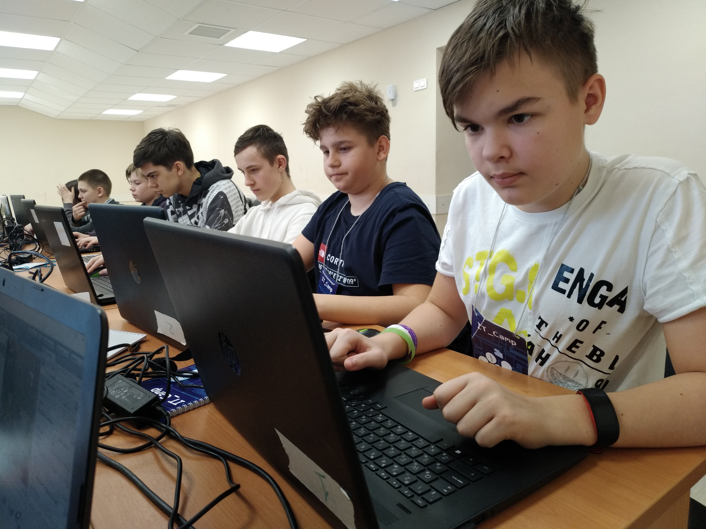

|  | Наверное, у вас накопилось много вопросов: |
В течении всего 5 дней, они трудились в поте лица, работали, продумывали персонажей, писали скрипты и просто
хорошо проводили время. Для создания "Побега из IT-Camp" использовался движок Unity, ввиду его очевидных преимуществ:
простоты изучения, интуитивности интерфейса и более менее хорошей графики. |